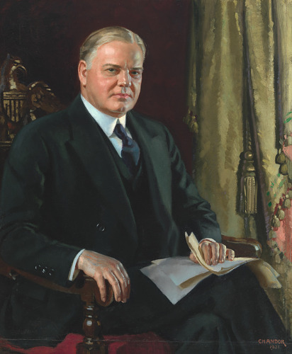

Directions: Fill in the chart as we study each part of Hoover's program. Keep this page in your notebook. You will use it again on the review day before the unit test.

| Part of the record | What Hoover did or believed | The reasoning behind it | Where it fell short |
|---|---|---|---|
| Beliefs | |||
| Farms and public works | |||
| The tariff | |||
| Lending at the top | |||
| The end of the term |
The program in one sentence. Finish this sentence in your own words, using at least two rows of the chart as evidence. Hoover's program fell short of the collapse because...
| Part of the record | What Hoover did or believed | The reasoning behind it | Where it fell short |
|---|---|---|---|
| Beliefs | Rugged individualism and voluntarism. Relief belonged to business cooperation, charities, and local government, coordinated and encouraged from Washington. | Direct federal relief, in Hoover's view, would weaken character and self reliance, unbalance the budget, and expand federal power. | Local funds fell as need rose, so the level of government assigned to pay was the level least able to pay. |
| Farms and public works | The Federal Farm Board of 1929 lent to farm cooperatives, and Hoover expanded federal public works, including the great Colorado River dam. | Holding crops would steady farm prices, and construction would provide jobs as well as lasting structures. | Cooperative loans could not help farmers with no crop, and public works at their expanded scale employed a small share of the millions out of work. |
| The tariff | Hoover signed the Hawley-Smoot Tariff in June 1930, raising tariffs to the highest level in the country's history. | Protection would shelter American farms and factories from foreign competition. | Trading partners retaliated and cut world trade, and American exports and farm markets shrank further. |
| Lending at the top | The Reconstruction Finance Corporation of 1932 lent to banks, railroads, and insurance companies, and the Emergency Relief and Construction Act let it lend to states for relief. | Stability at the top would restore lending, employment, and jobs below, and state loans would support relief without federal grants. | Banks repaired their own balance sheets instead of lending, state loans were limited, and relief for families came last and slowly. |
| The end of the term | Federal troops cleared the Bonus Army camps in July 1932. Roosevelt won the election with about 57 percent of the vote and forty-two states. | The administration held the bonus to its 1945 schedule and defended its record against Roosevelt's promised new deal. | Photographs of the burning Anacostia camp fixed Hoover's image, and banks then closed state by state through the interregnum winter. |
The program in one sentence. Strong answers join design to scale. Hoover's tools were loans, pledges, and local relief, each built to steady institutions and encourage others to act, while the collapse had put about one worker in four out of work and was destroying the local funds and bank deposits the tools depended on.